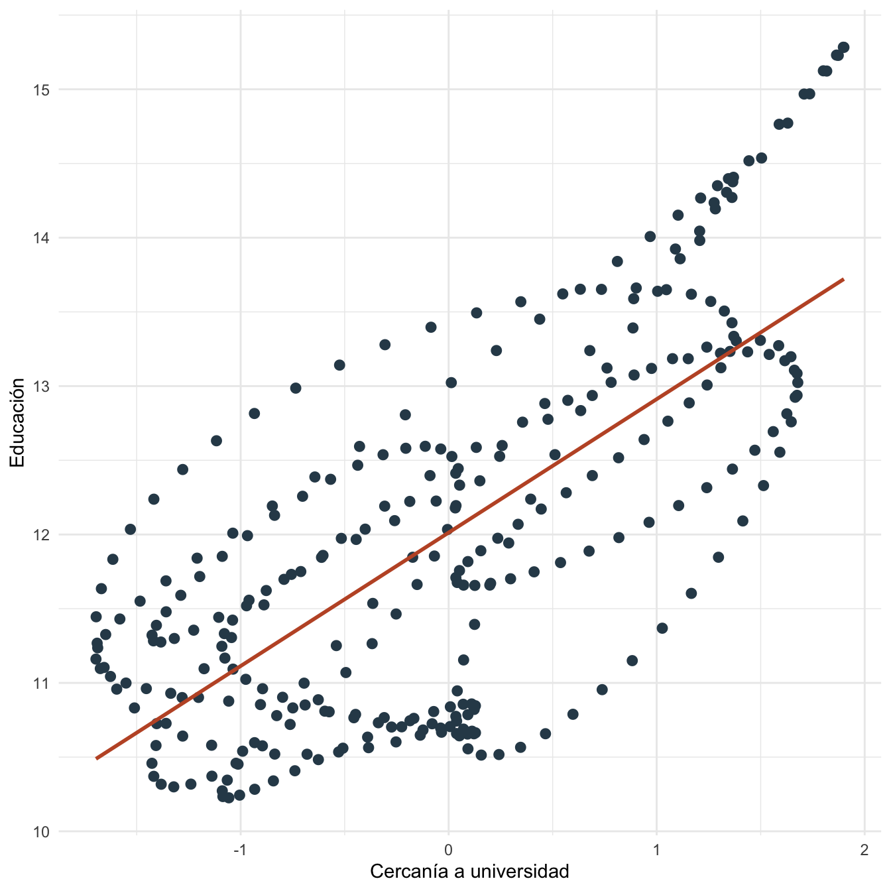
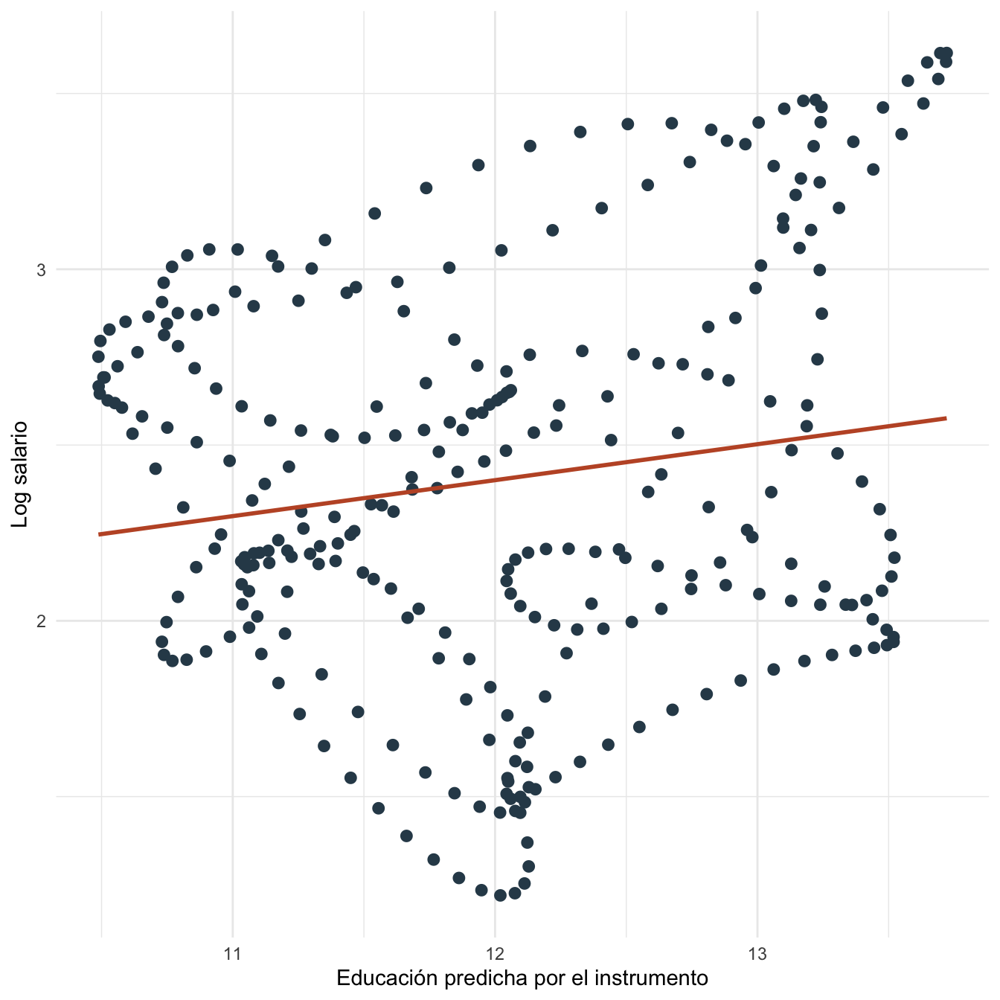

Capítulo 24 Variables instrumentales: práctica
24.1 Objetivos de la práctica
Al finalizar esta práctica podrás:
- Simular un problema de educación endógena en una ecuación de salarios.
- Estimar MCO, primera etapa y 2SLS manual en R.
- Calcular e interpretar el estadístico \(F\) de primera etapa.
- Reproducir el ejercicio en Stata y Python.
- Comparar qué variación usa MCO y qué variación usa IV.
24.2 Pregunta aplicada
Queremos estimar el retorno de la educación sobre salarios cuando educación está correlacionada con habilidad no observada.
¿Podemos usar una variable de cercanía a la universidad para aislar variación en educación que no dependa directamente de habilidad?
24.3 Datos
Creamos una base reproducible. La variable cercania actúa como instrumento: afecta educación, pero en la simulación no entra directamente en salarios.
n_iv <- 300
i_iv <- 1:n_iv
habilidad_iv <- scale(sin(i_iv / 9) + cos(i_iv / 13))[, 1]
cercania <- scale(cos(i_iv / 17) + sin(i_iv / 6))[, 1]
educ_iv <- 12 + 0.9 * cercania + 0.8 * habilidad_iv + 0.4 * sin(i_iv / 5)
epsilon_iv <- 0.25 * sin(i_iv / 4)
lwage_iv <- 1.2 + 0.10 * educ_iv + 0.45 * habilidad_iv + epsilon_iv
datos_iv <- data.frame(
lwage = lwage_iv,
educ = educ_iv,
cercania = cercania,
habilidad = habilidad_iv
)
kable(head(datos_iv, 12), digits = 3, caption = "Primeras observaciones de la base de variables instrumentales")| lwage | educ | cercania | habilidad |
|---|---|---|---|
| 3.119 | 13.981 | 1.207 | 1.019 |
| 3.247 | 14.271 | 1.362 | 1.112 |
| 3.363 | 14.537 | 1.504 | 1.197 |
| 3.460 | 14.772 | 1.630 | 1.272 |
| 3.536 | 14.969 | 1.736 | 1.338 |
| 3.588 | 15.123 | 1.818 | 1.393 |
| 3.615 | 15.228 | 1.873 | 1.436 |
| 3.615 | 15.283 | 1.900 | 1.466 |
| 3.590 | 15.283 | 1.898 | 1.483 |
| 3.541 | 15.230 | 1.865 | 1.486 |
| 3.472 | 15.124 | 1.801 | 1.475 |
| 3.384 | 14.968 | 1.709 | 1.450 |
ggplot(datos_iv, aes(x = cercania, y = educ)) +
geom_point(color = "#2f4858", size = 2.3) +
geom_smooth(method = "lm", se = FALSE, color = "#C0562F", linewidth = 1) +
labs(x = "Cercanía a universidad", y = "Educación") +
theme_minimal()
Figura 24.1: Primera etapa: cercanía a universidad y educación
24.4 Estimación en R
Estimamos MCO, primera etapa y 2SLS manual.
mco_iv <- lm(lwage ~ educ, data = datos_iv)
primera_iv <- lm(educ ~ cercania, data = datos_iv)
datos_iv$educ_hat <- fitted(primera_iv)
iv_manual <- lm(lwage ~ educ_hat, data = datos_iv)
tabla_mco_iv <- coef(summary(mco_iv))
tabla_primera_iv <- coef(summary(primera_iv))
tabla_iv_manual <- coef(summary(iv_manual))
beta_mco_iv <- unname(coef(mco_iv)[["educ"]])
se_mco_iv <- tabla_mco_iv["educ", "Std. Error"]
pi_cercania_iv <- unname(coef(primera_iv)[["cercania"]])
se_pi_cercania_iv <- tabla_primera_iv["cercania", "Std. Error"]
t_primera_iv <- pi_cercania_iv / se_pi_cercania_iv
f_primera_iv <- as.numeric(t_primera_iv^2)
r2_primera_iv <- summary(primera_iv)$r.squared
beta_iv_manual <- unname(coef(iv_manual)[["educ_hat"]])
se_iv_manual <- tabla_iv_manual["educ_hat", "Std. Error"]
kable(
data.frame(
modelo = c("MCO", "Primera etapa", "2SLS manual"),
coeficiente_clave = c(beta_mco_iv, pi_cercania_iv, beta_iv_manual),
error_estandar = c(se_mco_iv, se_pi_cercania_iv, se_iv_manual)
),
digits = 4,
caption = "MCO, primera etapa y 2SLS manual en R"
)| modelo | coeficiente_clave | error_estandar |
|---|---|---|
| MCO | 0.3394 | 0.0178 |
| Primera etapa | 0.8992 | 0.0498 |
| 2SLS manual | 0.1023 | 0.0362 |
También podemos escribir 2SLS con matrices. Usamos \(Z=[1,cercania]\) y \(X=[1,educ]\).
y_iv <- matrix(datos_iv$lwage, ncol = 1)
X_iv <- cbind(1, datos_iv$educ)
Z_iv <- cbind(1, datos_iv$cercania)
Pz_iv <- Z_iv %*% solve(t(Z_iv) %*% Z_iv) %*% t(Z_iv)
beta_2sls_mat <- solve(t(X_iv) %*% Pz_iv %*% X_iv) %*% t(X_iv) %*% Pz_iv %*% y_iv
beta_2sls_matriz_iv <- as.numeric(beta_2sls_mat[2, 1])ggplot(datos_iv, aes(x = educ_hat, y = lwage)) +
geom_point(color = "#2f4858", size = 2.3) +
geom_smooth(method = "lm", se = FALSE, color = "#C0562F", linewidth = 1) +
labs(x = "Educación predicha por el instrumento", y = "Log salario") +
theme_minimal()
Figura 24.2: Educación predicha por el instrumento y log salario
24.5 Interpretación
La pendiente MCO de educación es 0.339. La pendiente 2SLS manual es 0.102. En esta simulación, la diferencia aparece porque educación está correlacionada con habilidad no observada.
La primera etapa estima un efecto de cercanía sobre educación de 0.899. El estadístico \(F\) de primera etapa es 326.32 y el \(R^2\) de primera etapa es 0.523.
El error estándar del 2SLS manual no debe usarse como error estándar final en una aplicación real. Sirve para entender el cálculo. En Stata, Python o R con paquetes especializados se debe usar una rutina IV que ajuste la matriz de varianza.
24.6 Estimación en Stata
El mismo ejercicio puede reproducirse en Stata:
clear
set obs 300
gen i = _n
gen habilidad = sin(i/9) + cos(i/13)
summ habilidad
replace habilidad = (habilidad - r(mean)) / r(sd)
gen cercania = cos(i/17) + sin(i/6)
summ cercania
replace cercania = (cercania - r(mean)) / r(sd)
gen educ = 12 + 0.9*cercania + 0.8*habilidad + 0.4*sin(i/5)
gen epsilon = 0.25*sin(i/4)
gen lwage = 1.2 + 0.10*educ + 0.45*habilidad + epsilon
reg lwage educ
reg educ cercania
ivregress 2sls lwage (educ = cercania), first
estat firststageLos resultados esperados son los mismos coeficientes que Stata debe reproducir si usa la misma base y especificación:
| Modelo | Coeficiente clave aproximado | Error estándar aproximado |
|---|---|---|
| MCO: educación | 0.339 | 0.018 |
| Primera etapa: cercanía | 0.899 | 0.050 |
| 2SLS manual: educación predicha | 0.102 | 0.036 |
| \(F\) primera etapa | 326.32 |
24.7 Estimación en Python y Google Colab
Para correr esta práctica en Google Colab:
Luego ejecuta:
import numpy as np
import pandas as pd
import statsmodels.api as sm
n = 300
i = np.arange(1, n + 1)
habilidad = np.sin(i / 9) + np.cos(i / 13)
habilidad = (habilidad - habilidad.mean()) / habilidad.std(ddof=1)
cercania = np.cos(i / 17) + np.sin(i / 6)
cercania = (cercania - cercania.mean()) / cercania.std(ddof=1)
educ = 12 + 0.9*cercania + 0.8*habilidad + 0.4*np.sin(i / 5)
epsilon = 0.25*np.sin(i / 4)
lwage = 1.2 + 0.10*educ + 0.45*habilidad + epsilon
datos = pd.DataFrame({"lwage": lwage, "educ": educ, "cercania": cercania})
mco = sm.OLS(datos["lwage"], sm.add_constant(datos[["educ"]])).fit()
primera = sm.OLS(datos["educ"], sm.add_constant(datos[["cercania"]])).fit()
datos["educ_hat"] = primera.fittedvalues
iv_manual = sm.OLS(datos["lwage"], sm.add_constant(datos[["educ_hat"]])).fit()
print(mco.summary())
print(primera.summary())
print(iv_manual.summary())
print("F primera etapa:", float(primera.tvalues["cercania"]**2))Los resultados esperados son los mismos coeficientes que Python debe reproducir si usa la misma base y especificación.
24.8 Comparación R, Stata y Python
R, Stata y Python coinciden en la primera etapa y en los coeficientes si usan la misma base. Para inferencia final en IV, Stata y paquetes especializados ajustan los errores estándar de 2SLS; la segunda etapa manual es pedagógica.
| Tarea | R | Stata | Python |
|---|---|---|---|
| MCO | lm(lwage ~ educ) |
reg lwage educ |
sm.OLS() |
| Primera etapa | lm(educ ~ cercania) |
reg educ cercania |
sm.OLS(educ, Z) |
| 2SLS | matriz o paquetes | ivregress 2sls |
matriz o paquetes |
| \(F\) primera etapa | \(t^2\) si hay un instrumento | estat firststage |
tvalues^2 |
24.9 Errores frecuentes en la práctica
- Confundir primera etapa fuerte con instrumento válido. La fuerza habla de relevancia, no de exogeneidad.
- Usar errores estándar de una segunda etapa manual. Sirve para aprender, no para reportar inferencia final.
- No reportar primera etapa. Sin primera etapa, el lector no puede evaluar relevancia.
- Olvidar el canal directo. Si el instrumento afecta \(y\) por un canal distinto a \(X\), viola exogeneidad.
24.10 Ejercicios computacionales
- Reduce el coeficiente de
cercaniaen la ecuación de educación. ¿Qué ocurre con el \(F\) de primera etapa? - Haz que
cercaniaafecte directamentelwage. ¿Qué supuesto se viola? - Compara MCO, 2SLS manual y el estimador matricial.
- Reproduce el ejercicio en Stata o Python.
- Resuelve las partes C, D y F del Problem Set 4: Endogeneidad y variables instrumentales.